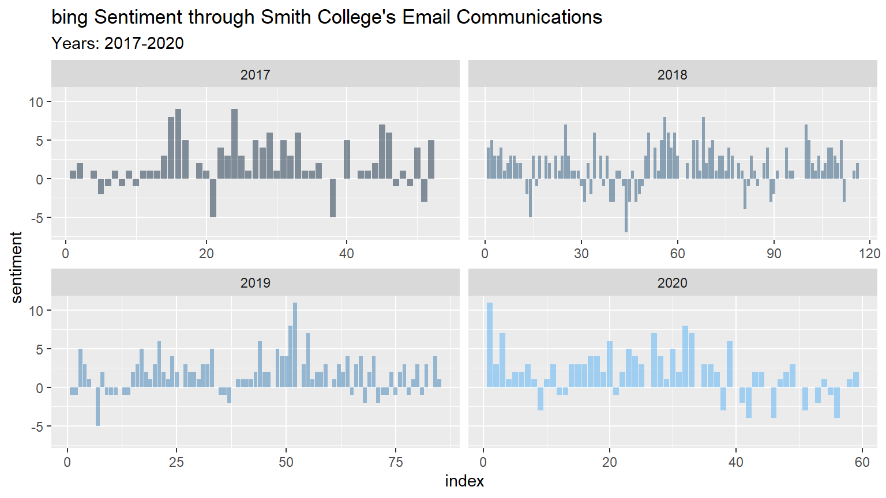
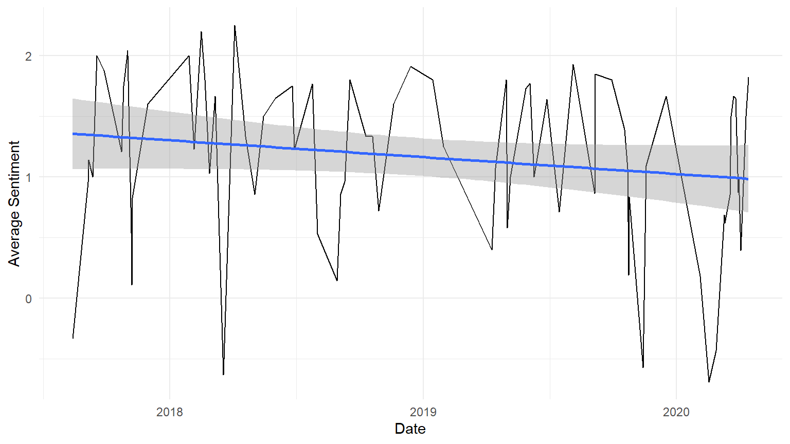

#starter code :)
#loading libraries
library(tidytext)
library(stringr)
library(tidyverse)
library(wordcloud)
library(dplyr)
library(reshape2)
library(lubridate)
library(ggplot2)
library(textdata)
#load the rda file
load(file = "textdata.Rda")
#code to get started
#"pasted this part from Emily :), original code by Jeny :)"
df_tidy <- df_full %>%
unnest_tokens(word, content) %>%
anti_join(stop_words) #calls for bing sentiment lexicon
bing_lex = get_sentiments("bing")
#each year splits into groups of 50 words (we can vary this)
#sentiment score is calculated
bing_score <- df_tidy %>%
mutate(year = year(date)) %>%
group_by(year) %>%
mutate(word_count = 1:n(),
index = word_count %/% 50 + 1) %>%
inner_join(bing_lex, by = "word") %>%
count(year, index = index , sentiment) %>%
ungroup() %>%
spread(sentiment, n, fill = 0) %>%
mutate(sentiment = positive - negative,
date = factor(year)) %>%
ggplot(aes(index, sentiment, fill = year)) +
geom_bar(alpha = 0.5, stat = "identity", show.legend = FALSE) +
facet_wrap(~ date, ncol = 2, scales = "free_x") +
labs(title = "bing Sentiment through Smith College's Email Communications", subtitle = "Years: 2017-2020")
bing_score
We were interested to see how the sentiment score of the grouped content, consisting of \(50\) words each, changes as time passes within the four years. For the most part, emails communicated in 2020 were positive overall, however, over time the emails begin to have content that the bing lexicon determines as negative. In our raw data, COVID-19 related emails began February 7th, 2020, and since then the sentiments of the emails have been negative. There have also been more words contained in the 2020 emails in comparison to the other three years. The only other year that has a similar negative sentiment as 2020 is 2018, and a significant number of 2018 emails dealt with campus climate and issues of inclusion and equity. Clearly, according to the bing lexicon, communication between the administration and the Smith community is more likely to be negative than in the other three years.
# Using the nrc lexicon
# Citation: Saif M. Mohammad and Peter Turney. (2013), ``Crowdsourcing a Word-Emotion Association Lexicon.'' Computational Intelligence, 29(3): 436-465.
nrc <- get_sentiments("nrc")
# Our data
df_long <- df_full %>%
unnest_tokens(word, content)
df_filterNRCwords <- df_long %>%
inner_join(nrc)
# Comparing pre-COVID19 and post-COVID19
df_prePost <- df_filterNRCwords %>%
mutate(postCo = if_else(date>="2020-02-07", 1, 0))
# Creating Table
# Combing columns side-by-side
first <- data.frame(Ranking=1:10)
second <- df_prePost %>%
filter(postCo==0) %>%
group_by(sentiment) %>%
summarise(N=n()) %>%
group_by(sentiment) %>%
arrange(-N) %>%
select(1)
names(second) <- "Pre COVID-19"
third <- df_prePost %>%
filter(postCo==1) %>%
group_by(sentiment) %>%
summarise(N=n()) %>%
group_by(sentiment) %>%
arrange(-N) %>%
select(1)
names(third) <- "Post COVID-19"
library(DT)
rankingTable <- do.call("cbind", c(first,second,third))
datatable(rankingTable)# df_prePost %>%
# group_by(postCo,sentiment) %>%
# summarise(N=n()) %>%
# group_by(sentiment) %>%
# arrange(postCo,-N)# Using word cloud (thank you whitney) to compare positive words (the greatest number for both pre and post COVID)
#word cloud of 50 most frequently used negative and positive words
# PRE
df_prePost %>%
filter(postCo==0) %>%
count(word, sentiment, sort = TRUE) %>%
acast(word ~ sentiment, value.var = "n", fill = 0) %>%
comparison.cloud(colors = c("red", "green"),
max.words = 50)# POST
df_prePost %>%
filter(postCo==1) %>%
count(word, sentiment, sort = TRUE) %>%
acast(word ~ sentiment, value.var = "n", fill = 0) %>%
comparison.cloud(colors = c("red", "green"),
max.words = 50)sentiment_by_time <- df_long %>%
#mutate(date2 = floor_date(show_date, unit = "6 months")) %>%
group_by(date) %>%
mutate(total_words = n()) %>%
ungroup() %>%
inner_join(get_sentiments("nrc"))
library(ggplot2) # for some reason this is required again.
sentiment_by_time %>%
filter(sentiment %in% c("positive", "negative")) %>%
count(date, sentiment, total_words) %>%
ungroup() %>%
mutate(percent = n / total_words) %>%
ggplot(aes(date, percent, color = sentiment)) +
geom_line(size = 1.5) +
geom_smooth(method = "lm", se = FALSE, lty = 2) +
expand_limits(y = 0)sentiment_by_time %>%
filter(sentiment %in% c("anger", "sadness")) %>%
count(date, sentiment, total_words) %>%
ungroup() %>%
mutate(percent = n / total_words) %>%
ggplot(aes(date, percent, color = sentiment)) +
geom_line(size = 1.5) +
geom_smooth(method = "lm", se = FALSE, lty = 2) +
expand_limits(y = 0)angerWords <- df_filterNRCwords %>% filter(sentiment=="anger") %>% group_by(word) %>% summarize(N=n()) %>% arrange(-N)
names(angerWords) <- c("Anger Words", "Frequency")
datatable(angerWords)# HOW INDIVIDUAL WORDS HAVE BEEN USED OVER TIME
df_long %>%
# mutate(date2 = floor_date(show_date, unit = "1 month")) %>%
filter(word %in% c("challenge", "bias", "violence",
"advocacy", "hate", "disease")) %>%
count(date, word) %>%
ungroup() %>%
ggplot(aes(date, n, color = word)) +
# Make facets by word
facet_wrap(~word) +
geom_line(size = 1.5, show.legend = FALSE) +
expand_limits(y = 0)Ranking: NRC has ten sentiment categories. When listed from most to least observations there is not much of a difference between pre and post COVID. The only substantial sentiment that shifts is anger (from 7th in Pre-COVID-19 to 8th in Post-COVID-19).
Word Cloud: Looking at the word cloud for before and after the start of COVID-19, and going back to the original letters, the shift is most likely to do with the previous hate issues that were on campus preceding COVID-19.
Sentiment analysis over time graphs:
Comparing Positive and Negative Sentiments: It is important to note a limitation of using sentiment analysis with the “Letters to the Community” - when addressing the public, negative words are intentionally minimized. Thus, the overall use of negative words is always less than the usage of positive words. Still, we notice a decrease in positive words over time, suggesting that while an increase in negative sentiment is not shown, the president verbalised the worsening situation.
Comparing Anger and Sadness: The trends for anger and sadness over time are almost identical in shape, this suggests that the issues that the “Letters to the Community” addressed were issues that caused a sad emotional response (such as hate crime and COVID-19).
Comparing Specific words: The five most used anger words and the word “disease” were tracked over time. As expected, “disease” was only used after COVID-19. “violence” seemed to have peaked in early 2018.
afinn_lex <- get_sentiments("afinn")
df_tidy <- df_tidy %>%
group_by(ID) %>%
mutate(wordplace = row_number()) %>%
ungroup()
lex_df <- inner_join(df_tidy, afinn_lex, by = "word") %>%
group_by(date, ID) %>%
summarise(sentiment = sum(value), avg_sent = mean(value))
ggplot(lex_df, aes(x = date, y = avg_sent)) +
geom_line() +
theme_minimal() +
labs(x = "Date", y = "Average Sentiment") +
geom_smooth(method = "lm") AFINN’s unique categorization system allows us to perform more purely quantitative analysis on the Smith College Letters to the Community. By assigning an actual number value to each word in the lexicon, we can calculate the average sentiment in each letter from the year 2017 to present day. In the plot above, we can observe that average sentiment is generally decreasing through time, partially due to an increased frequency in extreme sentiment dips at the end of 2019 and in early 2020. Obviously, this dip in 2020 can be primarily attributed to news surrounding the COVID-19 pandemic, but the origin of the dips in late 2019 is less clear. This graph is also useful in illustrating the frequency with which Letters to the Community were published; we can see that for a period in early 2019, letters were published much less frequently than in prior months, possibly due to the winter vacation from classes. There is a similar pattern in early 2018 and early 2020.
A note about mean calculations with the AFINN lexicon: though expansive, AFINN does not include every word in the English language, and through our analysis we have intentionally excluded “filler” words like “the” and “to”. In order to calculate the mean sentiment per letter, we are using only the words present in the AFINN lexicon. This means that we are certainly underestimating the number of words per letter, potentially skewing the mean sentiment calculations for longer letters with fewer words present in the AFINN lexicon. The mean calculations should be taken as solely reflective of the letters within the context of this particular lexicon.
#commented code out because it doesn't run. Sorry, Emily :(
#letter_length <- lex_df %>%
#group_by(ID, date) %>%
#summarise(length = max(wordplace), avg_value = mean(value))
#ggplot(letter_length, aes(x = date, y = length)) +
#geom_line() +
#theme_light() +
#labs(x = "Date", y = "Length of Letter")```